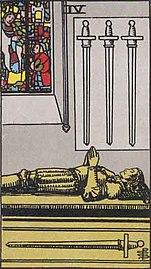

Kingdom of Britajofia
* Crimes against the person was ratified meaning any crime involving depriving a person of personal liberty.
This definition is broad and includes kidnapping, false imprisonment, human trafficking, &c.
Britajofia is a minor nation in the Ixil Isles, and is represented by the four of swords in the game of cards.

Vert, three ouroboros argent
